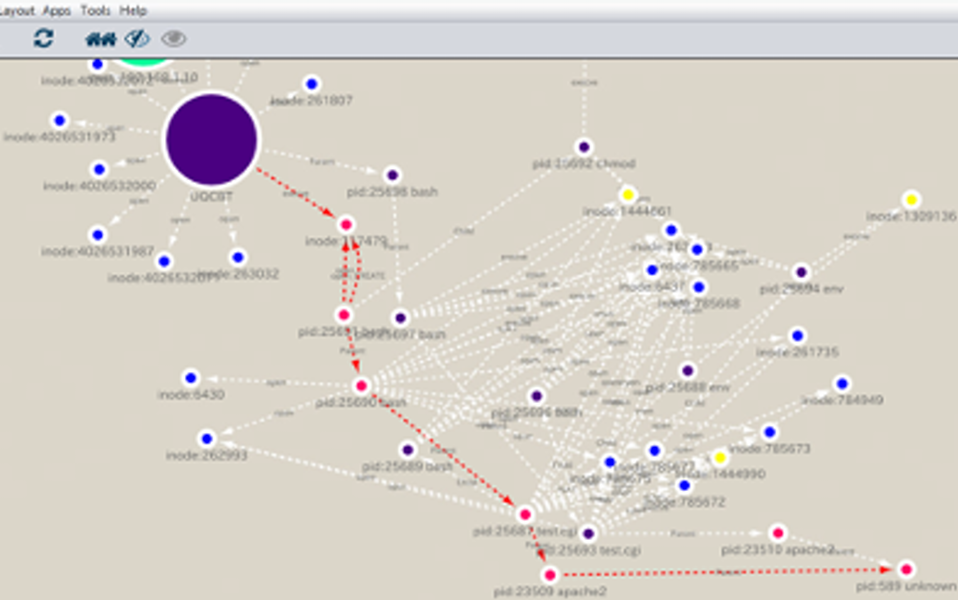

違法有害情報の検出技術
橋本正樹研究室では、情報セキュリティの関連技術を幅広く扱っています。 核となるのはセキュリティやアクセス制御技術、その応用としての侵入検出・防御システムですが、 その他にも、偽ショッピングサイトやフィッシングサイトの自動検出、脅威アクターの分析技術、 マルウェア解析、脆弱性管理、デジタル・フォレンジックスなどに関する研究開発を行っています。
橋本正樹研究室では、情報セキュリティの関連技術を幅広く扱っています。 核となるのはセキュリティやアクセス制御技術、その応用としての侵入検出・防御システムですが、 その他にも、偽ショッピングサイトやフィッシングサイトの自動検出、脅威アクターの分析技術、 マルウェア解析、脆弱性管理、デジタル・フォレンジックスなどに関する研究開発を行っています。